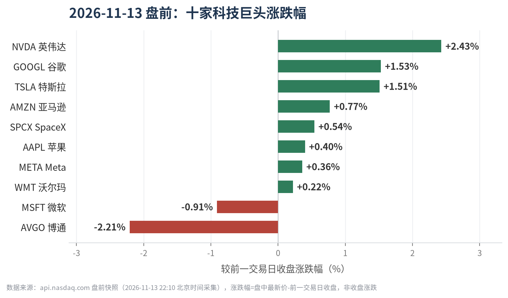
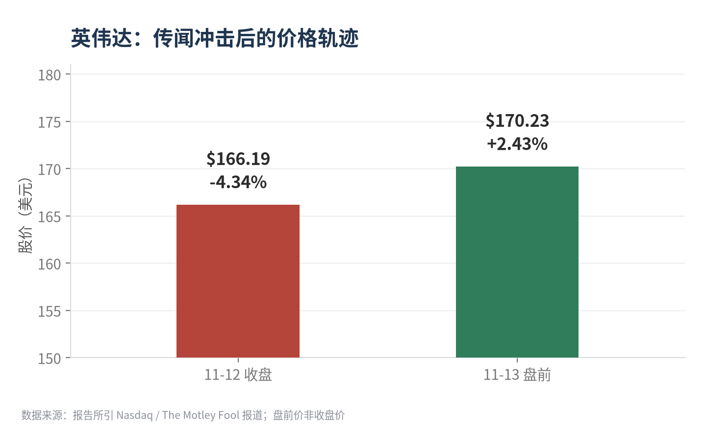

先看一组数字。
11 月 12 日，英伟达收跌 4.34%，报 166.19 美元，标普 500 同日跌 0.36% 至 7,592 点。到了 11 月 13 日盘前，英伟达又涨 2.43%，回到 170.23 美元。
先砸，再拉。
触发这一轮波动的，不是财报，不是产品，也不是监管处罚，而是一条指向 CEO 黄仁勋辞职的媒体报道。巧的是，同一天英伟达还向 SEC 提交了一份 8-K，但报告所依据的材料摘要里，并没有披露这份 8-K 的具体事项。
先把结论放前面：这一天真正的信息量，不在“跌了多少”，而在“这条消息至今没有被官方来源确认”。它更像一次由未证实报道触发的情绪定价，而不是一次基本面事件。
01
盘面先分化了
报告采集的 11 月 13 日盘前快照里，十家科技巨头的方向并不一致。英伟达、谷歌、特斯拉领涨，微软与博通则在下跌。

图 1｜2026-11-13 盘前涨跌幅。数据来源：api.nasdaq.com，采集于 22:10（北京时间）
需要说明口径：这里是盘前快照，不是收盘价，涨跌幅是“最新价减去前一交易日收盘”，不能直接当成全天结果。
盘面上值得注意的是一处反差：11 月 12 日的报道标题提到“竞争对手股价上涨”，但到了 13 日盘前，被报告列入同组的博通却跌了 2.21%，微软跌 0.91%。一天的股价方向，还不足以证明资金在系统性地从英伟达流向对手。
这是判断，不是事实。事实只有两条：12 日英伟达跌了 4.34%，13 日盘前涨了 2.43%。
02
这条消息，到底确认了多少
报告给这条 CEO 变动消息的标注是“待核验（来源不足 2 个）”。换句话说，多篇报道其实指向同一篇原始文章，经 Nasdaq 聚合呈现，没有形成独立交叉验证。
把目前能落地的证据摊开看：
| 待核验项 | 现有证据 | 状态 |
|---|---|---|
| CEO 是否辞职 | 单一财经媒体报道，无公司公告佐证 | 待核验 |
| 11-12 提交的 8-K | SEC EDGAR 确认文件存在，但摘要未披露事项内容 | 待核验 |
| 继任与过渡安排 | 报告材料未提供任何信息 | 无信息 |
| 下一次财报电话会 | 报道称定于 11 月 17 日举行 | 已提及 |
三个“待核验”叠在一起，指向同一个结论：在官方公告、SEC 文件正文或公司投资者关系页给出说法之前，这条消息只能当传闻处理。

图 2｜英伟达收盘价与次日盘前的价格对比。数据来源：报告所引 Nasdaq / The Motley Fool 报道
8-K 这条线索尤其值得盯。按美国证券披露惯例，8-K 用来披露重大事项——业绩、重大合同、高管变动、并购、资本运作都在射程内。但报告拿到的是“已提交”这个事实，不是“提交了什么”。文件存在，不等于内容等于辞职传闻。
把两件事直接画等号，是眼下最容易犯的错。
03
同一天，算力叙事在换挡
如果把视线从英伟达挪开，11 月 13 日的报告里还有几条更安静、但可能更耐读的线索。
其一，AI 芯片的部署权在往下游走。报告提到，谷歌允许客户在自有数据中心运行其 TPU。这是事实层面的产品策略变化；至于它会不会削弱英伟达的议价能力，属于推断，报告没有给出订单或份额数据。
其二，云厂商在重新算“自建还是外租”。报告称微软重新评估与 neocloud 公司的合同、优先自有数据中心。另有报道提到 AMD 股价上涨，部分原因与和 Alphabet 达成的大额 CPU 交易有关。
其三，自动驾驶仍在按区域推进。特斯拉 FSD 获芬兰批准，欧洲扩张继续；同时有报道称特斯拉计划在 2027 年前停产 Cybertruck，为 Cybercab 让路。
这三条放在一起，指向的是一个方向：算力供给正在从“一家独供”走向“多路径供给”，但这条路才刚开头，谁受益、受益多少，现在下结论都太早。
04
给你一个能反复用的三问框架
以后再遇到“某巨头 CEO 出事”“某公司被传重大变动”这类消息，别急着看跌幅，先过三道闸。
第一问，真实性。有没有公司公告、监管文件正文、投资者关系页这类一手来源？只有媒体报道，就先放进“待核验”篮子。
第二问，机制。就算消息为真，它通过什么路径影响收入、成本或竞争格局？说不清传导链条的，多半是情绪。
第三问，价格反映到哪一步。跌 4.34% 是“一次性消化”，还是“趋势起点”？这要看后续有没有成交量、评级和指引的公开记录，而不是看一根 K 线。
这三问不保证你判断对，但能保证你不被一条没落地的消息牵着走。
05
接下来盯三件事
一，英伟达官方公告或 SEC 8-K 正文，是否对高管变动给出明确说法。
二，11 月 17 日财报电话会，管理层是否出席、是否重申产品路线图与指引。
三，后续股价与成交量数据，以及是否出现分析师评级调整的公开记录。
顺便说一句，这份报告本身也把“60 条待人工核验事件”写在了数据质量说明里。信息越快的市场，越需要有人把“已确认”和“听说”分开写。
今天这篇，我更愿意把它当成一次“核验练习”，而不是一次行情解读。真正的答案，大概率要等 11 月 17 日那通电话会。
数据来源：Nasdaq Top 10 科技与资本情报日报（报告日期 2026-11-13，数据截止 2026-11-13 14:10 UTC）；行情来自 api.nasdaq.com，新闻来自 Nasdaq News / PR Newswire，公告来自 SEC EDGAR。本文仅为公开信息整理与个人分析，所有“推断”均非既定事实，不构成任何投资建议。投资有风险，入市需谨慎。